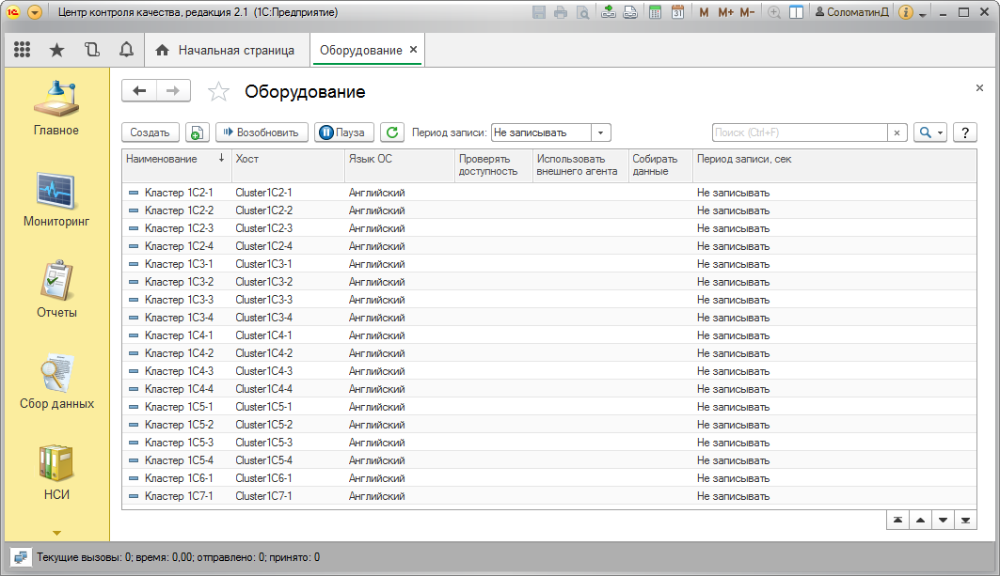

Данная форма позволит вам открыть настройки сбора данных загруженности оборудования, управлять фоновыми заданиями по сбору данных, управлять периодом записи текущих значений счетчиков производительности в регистр сведений "Текущие значения производительности".

Команда "Пауза" предназначена для остановки фоновых заданий сбора данных загруженности оборудования. Для каждого хоста выполняется отдельное фоновое задание, которое в процессе выполнения каждые 60 секунд считывает настройки. В случае установки паузы фоновое задание завершиться.
Для возобновления сбора данных (запуска фонового задания) необходимо выполнить команду "Возобновить". Запуск фоновых заданий сбора данных загруженности оборудования осуществляется отдельным регламентным заданием "СборСчетчиковПроизводительности", которое выполняет роль стартера.
Фоновое задание сбора данных загруженности оборудования каждую секунду получает данные по счетчикам производительности и раз в 60 секунд записывает усредненные значения в регистры сведений счетчиков. Так же фоновое задание с указанным периодом обновляет данные в регистре сведений "Текущие значения производительности". Управление периодом записи в регистр сведений "Текущие значения производительности" осуществляется через выпадающий список "Период записи" (для всех хостов), либо в форме элемента.
Следует обратить внимание, что установка периода записи в 1 секунду при большом количестве хостов может повлечь довольно значительную нагрузку на СУБД.